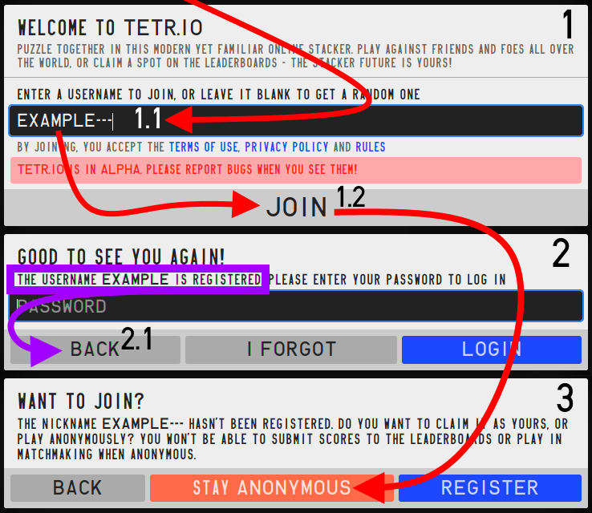
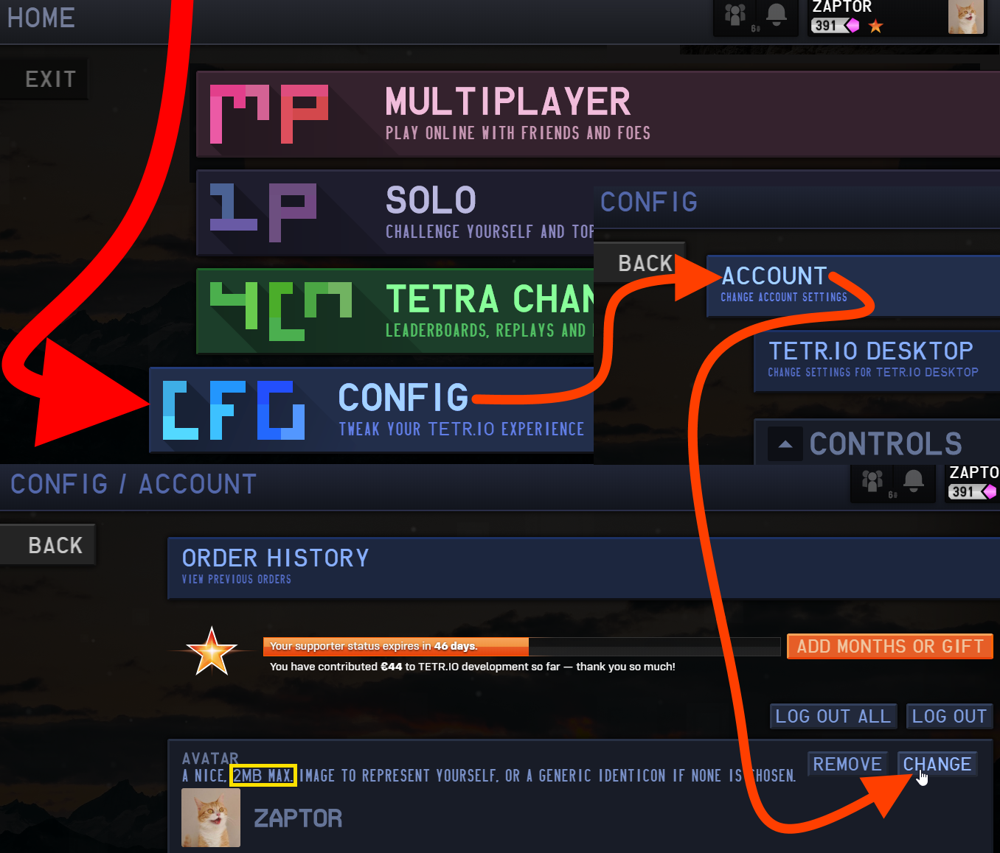
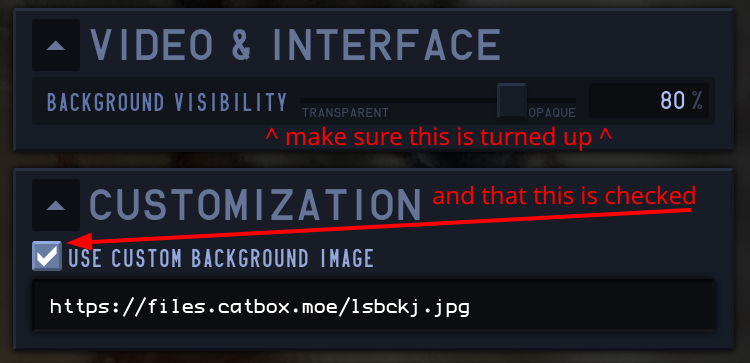

Annotated instructions for logging into one's account.

Annotated instructions for the registration of an "anonymous" account.
User Accounts
TETR.IO users are represented by ingame accounts, like in any other online service. Registered users can customize their ingame appearance through a variety of ways, both paid and unpaid. Here's some common missteps people fall in regarding customization/general usage:
Registrationregister
Welcome to TETR.IO! While you can play with a far less involved "anonymous" account, a fully registered account is your only ticket into the TETRA LEAGUE, saved 40 LINES and BLITZ records, access to a customizable profile card and userpage(such as profile pictures), and more!
To create a TETR.IO account, first, navigate to https://tetr.io/. You will be greeted with the registration dialog immediately, provided you aren't already logged in(1). From here,
Enter your chosen username(1.1) and click the JOIN button(1.2).
If the username is taken, you will be prompted for its password(2): in this case, back out and choose another username(2.1).
If the username is unoccupied, you will be prompted to either "STAY ANONYMOUS" or "REGISTER"(3).
After selecting REGISTER, you will be asked to supply an optional email, as well as the password you will lock your account with(4).
Please note that you are only allowed one registered account as per the alt policy found at https://tetr.io/about/rules/! Choose your name wisely: future name changes are only available with the purchase of TETR.IO supporter.
Logging Into Your Accountlogin
Logging into your registered account is easy, if not slightly obscure. The registration form doubles as a login questionnaire, so, if you know your username and password, just follow these steps!
When prompted to "ENTER A USERNAME TO JOIN"(1), enter in your registered account's username(1.1) and choose JOIN(1.2).
You'll see a section(2) asking for your password at this stage(2.1), enter that in and click LOGIN(2.2). That's it!
Resetting a Passwordpassreset
If you've forgotten your password, click I FORGOT(2.3). You'll be brought to an extra question asking you for the email tied to this account(3). Ensure you enter your email exactly as you entered it while registering! Case sensitivity doesn't matter, but do try a couple different emails before throwing in the "i musta not entered an email" hat!
Anonymous Registrationregisteranon
While impeded by several limitations, "anonymous" accounts are integral to TETR.IO's original concept of being "about as easy to join as a standard .IO game". They're also normally exempt from the alt policy, so you could have an secondary anonymous account as a registered user for controller play, for instance. All you need to make one is a single click on the JOIN button, if you don't mind having a non-descriptive username. Anonymous accounts can have customized usernames however, provided the username isn't already used by a registered account:
Simply enter a username(1.1) into the prompt you see while not logged into https://tetr.io/(1), then click JOIN(1.2).
If the username you chose is already in use, you'll be prompted for whoever owns that account's password(2). Please proceed to back out of this login attempt(2.1).
If the chosen username is free, simply click STAY ANONYMOUS to keep the username in an anonymous state(3)!
Profile Picturespfp
Registered TETR.IO user accounts may set their profile pictures for free from the relevant account settings category. The attached image shows you how to access this category, available from the ingame CONFIG option:

My Profile Picture Isn't NSFW!notnsfw
TETR.IO profile picture and banner uploads are automatically scrutinized, in accordance with rule 8, by an open source library, which in turn is powered by machine learning. The specific names of these projects are NSFWJS and TensorFlow, both of which are listed at the very top of TETR.IO's open source acknowledgements.
Do note that TETR.IO uses a different version of NSFWJS than what is on the linked website.
This means, at times, the automated detection process can incur a false-positive and deny you your rights to upload your otherwise safe for work imagery. There are ways around this system, but to disclose them here would be to make that information more accessible to bad actors. Just try another image.
Also see:
Humans are amazing at visual identification. NSFW tries to error more on the side of things being dirty than clean. It's part of what makes failures on NSFW JS entertaining as well as practical.
A closeup of an example player card. The "Report user" button is accessed after selecting "More options...".
If you would like to report any TETR.IO user for breaking the TETR.IO Community Rules, please use the ingame reporting systems instead of, say, public Discord channels!
As a registered user, simply click on a suspicious, rude, or otherwise problematic user's username or usercard, or, type said user's username into the ingame TETRA CHANNEL's search bar, accessible by clicking the third menu option, to access their "profile card". Once this card is open, simply click the arrow, and then click the report icon to begin the guided process of including details. If you report while in a room, chat logs will be automatically included.
Appealing an ingame banappeal
DO NOT APPEAL BANS IN THE TETR.IO DISCORD! Your message will be ignored at best.
To contact TETR.IO support regarding an issue with your account, visit https://tetr.io/about/support/ and follow the instructions.
For live technical help, feel free to ask in the #tetrio channel, where someone may be able to help you.
Please only do this after skimming the FAQ topics, however!
TETR.IO Supporter tiers are determined by your amount of total support - including purchases for yourself, gifts you've sent to other players, and any Patreon support from the old supporter system. You can check this number by going to CONFIG > ACCOUNT.
The cutoffs for each supporter tier are as follows:
€0 | Tier 1
€20 | ★ (Tier 2)
€80 | ★★ (Tier 3)
€250 | ★★★ (Tier 4)
Once you've achieved a supporter tier, you keep it forever. If your supporter expires, the supporter tier badge and name colour will be hidden, but will be reactivated if you purchase (or are gifted) more supporter. Furthermore, your name will be permanently listed in the game's credits when you reach 200€ of total support. Unlike other supporter benefits, this will remain even if your supporter expires.
Additionally, there are edge cases where notable individuals outside of the TETR.IO community (such as BTMC, well known osu! streamer) may be verified, although this, along with all requests for verification, is considered on a case by case basis.
Adding Resources
Looking to add your own backgrounds/skins to the game? Here's how to do it!
Built-in Background Customizationcustombg
Other image hosting sites such as Imgur work too, of course, but for years now, catbox.moe has been largely unintrusive for this purpose.
Q: How do I set a custom background?
A: Assuming you have a local file on your computer you'd like to use, just upload that file to catbox.moe. As of writing, it's free for use and simply works with TETR.IO's CORS header-requirements.
Background Troubleshooting
If your image is already hosted on the net(Catbox included), and you have a (nonfunctional ingame) link to use with TETR.IO's ingame background option, consider debugging that link with this interactive checker.
If this site is showing that the link should work, please proceed to hard-reload the game with CTRL+F5(yes, even on the desktop client). After this point, navigate into a SOLO 40 LINES match to confirm the background loading.

Custom Skinscustomskins
YOU WAIVE YOUR RIGHT TO REPORT TETR.IO ISSUES WITH EXTERNAL ADDONS INSTALLED! Issue reports with addons such as TETR.IO PLUS installed, even if not caused by the interference of external addons, will be considered invalid and promptly removed. In extreme cases, platform bans on Discord and Github will be considered if you fail to understand these terms even after repeated removal.
TETR.IO doesn't officially support custom skins, but there are addons that implement custom skins with the leeway of being manually installed on the user's system. One such addon is called TETR.IO PLUS, and there's more information at the open source TETR.IO PLUS GitLab wiki.
Once you have the addon installed, you may find this list of unaffiliated sites hosting graphics pertaining to the use of TETR.IO PLUS useful:
Interested in influencing TETR.IO's future? Feel free to comment on this pinned TETR.IO Github issue with opinions for the future of ingame customization!
Stock Resources
Looking to get a copy of TETR.IO's default assets? Here's some sources!
Musicmusic
TETR.IO's soundtrack is currently entirely provided by various musicians under the royalty free HURT RECORD label—that is to say, each soundtrack should be stream-safe, provided you show the onscreen watermark centered near the bottom, displaying the currently playing song during the very start of gameplay. Refer to HURT RECORD's terms of service for specific terms of use.
Authored by osk, here's a small sheet illustrating TETR.IO's fonts.
Here's a list of all of TETR.IO's fonts, as well as where you can download them and install them. Just right click these files in the File Explorer to do that.
Franklin Gothic already comes with Windows, though you're specifically looking for Franklin Gothic Medium.
Sound Effectssound-effects
All of TETR.IO's sound effects are stored in a single "sound effect atlas" found here. There's an issue with this file though; all sound effects are split only by time and not by file names, so it's likely this file isn't the one you want. If you would like a copy of all of the TETR.IO sounds split up, albeit with an ever so slightly lower quality, please download this .zip file, sourced from UniQMG's "sound effects extractor".
Backgroundsbackgrounds
The backgrounds, similar to TETR.IO's music, is all royalty free and hails from Unsplash. You can likely get extremely similar photographs for free here and use them as your background in TETR.IO itself, if the stock ones are getting tiresome.
 Authored by osk, here's a small sheet illustrating TETR.IO's fonts.
Authored by osk, here's a small sheet illustrating TETR.IO's fonts.